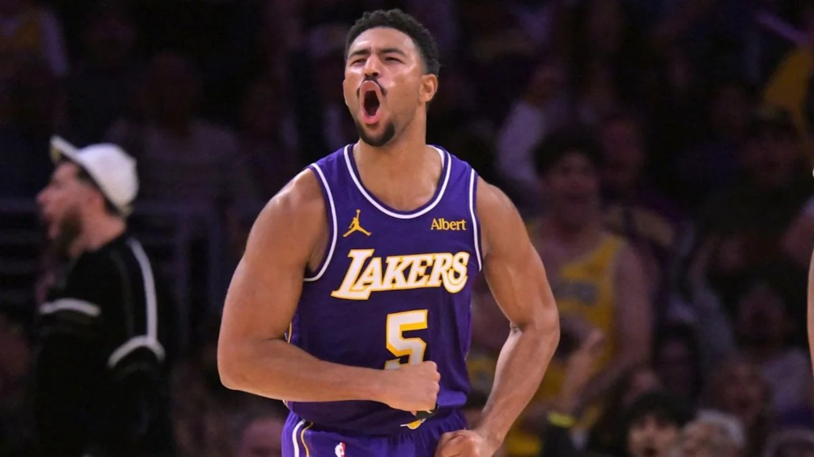
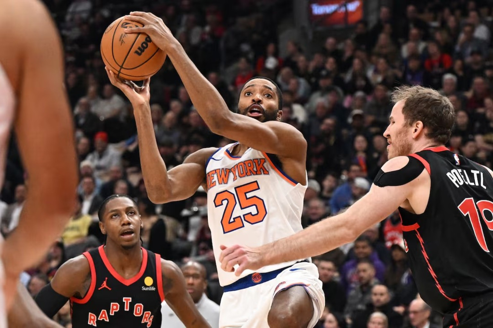
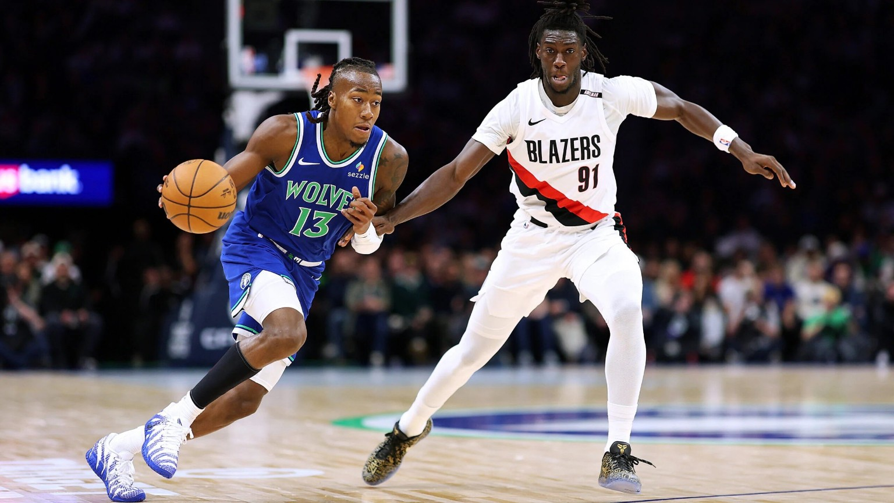
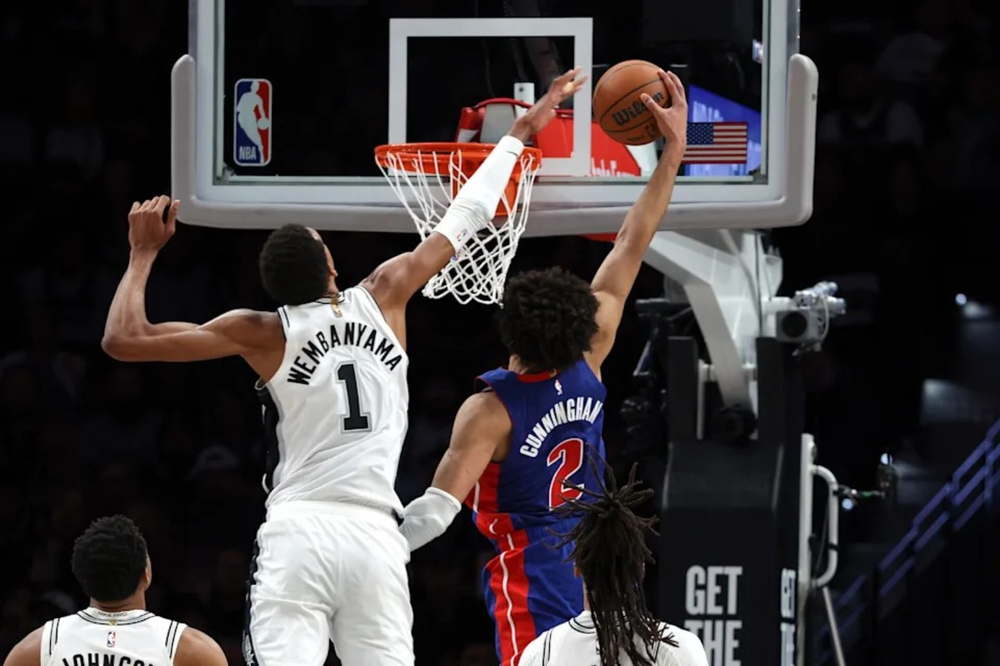
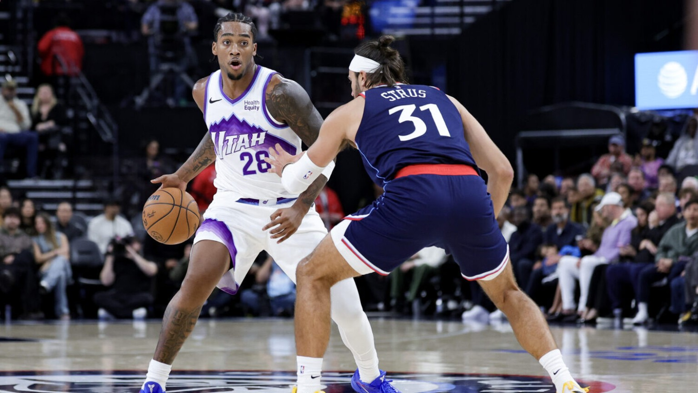
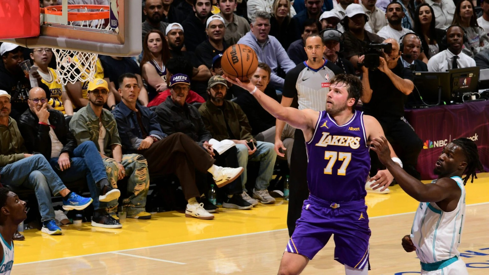

Player of the Night · Quentin Grimes
4DK Player of the Night
QUENTIN GRIMES · 47 POINTS
Ten made threes. Twenty-one fourth-quarter points. The tying shot with 1.7 seconds left. Brice Sensabaugh’s 40 off the bench made this a genuine debate, but Grimes’ rescue act in a comeback that extended Los Angeles’ streak to nine gives him the edge.
Game 1 / 5 · NEW YORK 111 · TORONTO 102
Brunson closes the door, Bridges finds his rhythm

Box Score Spotlight
Jalen Brunson scored 31 points, Karl-Anthony Towns delivered 16 points and 16 rebounds, and Mikal Bridges added 17. Toronto got 25 points and seven threes from Ja’Kobe Walter, with RJ Barrett adding 22 and Scottie Barnes 20.
The Turning Point
Toronto had a chance to seize the game late, but Brunson turned a tied score into a four-point advantage with a made three and the ensuing free throw. New York closed on a 9–0 run.
4DK Film & Floor Analysis
The Knicks did not simply survive a close road game; they demonstrated why late-game possession quality matters. Brunson forced the defense to make a decision and punished it. Bridges’ 17 points matter because New York’s ceiling depends on credible secondary scoring and spacing. Towns’ work on the glass supplied another dimension. Toronto’s inability to finish despite Walter’s hot shooting and multiple double-digit leads in recent games is a worrying pattern.
What It Means
Brunson’s finishing package remains New York’s late-game foundation, but a repeatable championship offense cannot require him to manufacture every decisive basket. Bridges’ shot-making is the swing factor to watch.
Game 2 / 5 · MINNESOTA 106 · PORTLAND 105
Ayo takes the wheel; McDaniels steals the finish

Box Score Spotlight
Ayo Dosunmu: 30 points, 7-for-11 from three. Jaden McDaniels: 22 points. LaMelo Ball: 18 points. Portland: Damian Lillard 25, Jrue Holiday 23.
The Turning Point
Dosunmu drilled a three with 50 seconds left to cut Portland’s lead to one. Minnesota then disrupted an inbounds play, and McDaniels converted the go-ahead layup with 2.6 seconds left. Trey Lyles blocked Lillard’s final look.
4DK Film & Floor Analysis
The story is not simply that Minnesota won without Anthony Edwards. Dosunmu is giving the Wolves an aggressive downhill scorer who can also punish defenses from outside. LaMelo accelerates the offense and finds opportunities before defenses get organized; McDaniels supplies rangy defensive play and timely scoring. That trio has complementary traits, but the Wolves’ turnover issues and dependence on a last-second rescue also show why declaring them a finished contender would be premature. Portland competed without Deni Avdija and nearly stole the second game of this back-to-back matchup.
What It Means
The ceiling question is fascinating: if Dosunmu sustains this offensive confidence when Edwards returns, Minnesota can stagger multiple creators rather than merely replace one injured star. That makes the team more dangerous; it does not erase the need to improve late-game ball security.
Game 3 / 5 · DETROIT 105 · SAN ANTONIO 93
Detroit ends twelve straight; Harper exits hurt

Box Score Spotlight
Cade Cunningham: 27 points. Daniss Jenkins: 25 points, 21 in the second half. Ausar Thompson: 14 points, 12 assists, 9 rebounds, 5 steals. Victor Wembanyama: 25 points, 18 rebounds. Dylan Harper: 20 points.
The Turning Point
After falling behind by 14, Detroit made a 21–7 second-quarter push and attacked the minutes when Wembanyama rested. The Pistons then controlled the middle of the game and held San Antonio to 93 points.
4DK Film & Floor Analysis
This was a measuring-stick win against a team riding a 12-game streak. Detroit did not rely on Cade alone: Jenkins changed the second half with his scoring, while Thompson filled the possession-by-possession gaps through passing, defensive disruption and rebounding. For San Antonio, Wembanyama was excellent individually, but the offense became less stable when the supporting cast could not keep Detroit from loading up. The night took a troubling turn when Harper slipped with under a minute remaining and left in pain. Initial reporting did not establish the severity; speculation about a specific diagnosis or recovery timeline would be irresponsible.
What It Means
Detroit’s defensive identity looks capable of traveling against elite competition. San Antonio must respond to its first loss in twelve games and monitor Harper’s availability; his rim pressure and secondary creation are not easy to replace.
Game 4 / 5 · UTAH 132 · LA CLIPPERS 107
Sensabaugh turns the fourth into a takeover

Box Score Spotlight
Brice Sensabaugh: 40 points, 11 rebounds, 8 threes; 25 points in the fourth. Keyonte George: 30 points, 11 assists. Clippers: Brook Lopez 23 points; Darius Garland and Rui Hachimura 20 apiece.
The Turning Point
Utah erupted for 44 points in the fourth quarter. Sensabaugh shot 10-for-11 in the period, including five threes, as the Jazz ran away with the game.
4DK Film & Floor Analysis
The Jazz did more than finally end a losing streak: they showed what their young scoring pieces can look like when pace, confidence and spacing connect. Sensabaugh attacked gaps before the defense could reset, and George’s playmaking gave Utah a second source of creation. Yet this is also an indictment of the Clippers. Allowing a struggling opponent to shoot 18-for-22 in a quarter is a defensive breakdown, not merely an unavoidable hot streak. The Jazz entered the night with only one win; this was their first victory since October 23.
What It Means
Utah can build on a breakout night without pretending one result fixes its season. For the Clippers, the question is how a veteran roster permits that level of fourth-quarter collapse.
Game 5 / 5 · LA LAKERS 118 · CHARLOTTE 114 (OT)
Grimes makes Lakers history as the streak reaches nine

Box Score Spotlight
Quentin Grimes: career-high 47 points, 10 threes. Luka Dončić: 36 points, 7 assists. Charlotte: Brandon Miller 28 points; Naz Reid 28 points, 11 rebounds.
The Turning Point
Los Angeles trailed by 18 in the second half. Grimes scored 21 in the fourth quarter and hit his tenth three with 1.7 seconds left to force overtime. The Lakers then survived a messy extra period and secured their ninth consecutive win.
4DK Film & Floor Analysis
Grimes did not merely complement Luka; he changed the entire game’s geometry. His shot-making forced Charlotte to defend far beyond its comfort zone, creating the space for a comeback that looked unlikely earlier. He joined Kobe Bryant as the only Lakers to make ten threes in a game. Luka’s 36 gave the offense its other pillar, but the win should not hide how difficult the Lakers made the assignment. With Austin Reaves and Walker Kessler out, the rotation needed an extraordinary scoring eruption to escape a struggling opponent. Charlotte deserves credit for building an 18-point lead, but its inability to close regulation and produce in the final stretch of overtime proved decisive.
What It Means
Nine straight victories reflect resilience and offensive firepower. The next step is demonstrating cleaner defensive execution and control before the closing minutes, rather than requiring historic individual performances to survive.